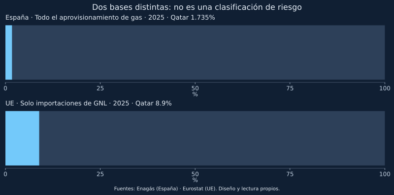

La cuota de Catar en el gas español y su peso en el valor de las importaciones europeas de GNL tienen denominadores y unidades distintos. Confundirlos produce una falsa medida de vulnerabilidad frente a Ormuz.
Para responder cuánto depende España del estrecho conviene empezar por una pregunta menos vistosa: ¿qué incluye exactamente el porcentaje que se cita? No es equivalente medir las compras de GNL, el conjunto de entradas de gas o el consumo nacional. Tampoco todas las importaciones que proceden de un proveedor representan energía finalmente consumida en el mismo país.
Dos cifras de 2025, dos bases de comparación
El informe de Enagás de 2025 muestra una cuota catarí del 1,735% en los aprovisionamientos físicos del sistema español. Eurostat sitúa a Catar en el 8,9% del valor de las importaciones extracomunitarias de GNL de la UE en 2025. El anexo de su publicación del 25 de marzo de 2026 lo identifica como cuota del comercio en valor. La primera base se refiere al aprovisionamiento físico de gas; la segunda es monetaria y se limita al GNL. No son porcentajes de petróleo ni observaciones de octubre de 2026.

| Dato | Período y base | Interpretación que debe evitarse |
|---|---|---|
| España: 1,735% | 2025; aprovisionamientos físicos de gas del sistema | «Solo ese porcentaje del consumo está en riesgo» |
| UE: 8,9% | 2025; valor de importaciones extracomunitarias de GNL | «El 8,9% de toda la energía europea cruza Ormuz» |
Dividir 8,9 entre 1,735 no calcula cuántas veces es más vulnerable Europa. Además de las bases distintas, España forma parte de la UE. Una comparación rigurosa exigiría el mismo producto, unidad, período y perímetro geográfico, además de separar cantidades contratadas, entregadas y consumidas.
Una comprobación aritmética, no un volumen medido de pérdidas
La página 23 de Enagás informa de 372.498 GWh de aprovisionamientos físicos en 2025; el mapa de la página 24 atribuye 6.403 GWh a Catar. Su cociente es aproximadamente 1,719%, frente al 1,735% publicado en el gráfico de la página 25. Multiplicar este último porcentaje por el total produce 6.462,84 GWh, unos 59,84 GWh más que el mapa. Las presentaciones no se reconcilian exactamente y no atribuimos la diferencia a una causa sin verificarla.
La comparación sirve para detectar una discrepancia, no para elegir una cifra como verdadera por cálculo. El gráfico propio conserva la cuota publicada, con esta salvedad. El volumen del mapa equivale a 6,403 TWh: un TWh son mil GWh. Ninguno de estos datos representa suministro interrumpido o energía no servida; antes de una comparación física exacta debe resolverse la base con la serie original y sus revisiones. Los insumos constan en el CSV de reconciliación.
Por qué una exposición directa limitada no elimina el coste
Un importador sin un cargamento catarí puede verse afectado al buscar reemplazos en un mercado con otros compradores. Es un mecanismo de competencia, no una estimación cuantificada de la subida de precios. El coste final también depende de contratos, coberturas, existencias y demanda. El monitor no contiene esos contratos ni una elasticidad que permita calcular el recibo de un hogar.
La distinción ayuda a ordenar tres preguntas: qué volumen directo requiere sustitución, a qué precio puede contratarse otro suministro y qué parte del sistema puede recibirlo y transportarlo. Una infraestructura flexible responde a la tercera; no garantiza por sí sola las otras dos.
Qué falta para actualizar este análisis
Antes de usarlo como diagnóstico actual deben incorporarse las entradas españolas de gas por origen del período comparable más reciente, los datos europeos equivalentes y las revisiones de ambas fuentes. El historial del monitor no reemplaza esas estadísticas: registra decisiones sobre Ormuz y no importaciones españolas.
El CSV de contexto conserva explícitamente los denominadores. Fuentes: Enagás, Informe 2025, páginas 23–25 y Eurostat, 25/03/2026, con anexo XLSX, VISUAL 2, A2 y D9:E9. Visualización y cálculo propios; las conclusiones y adaptaciones son responsabilidad de este proyecto, no de Eurostat. Se citan datos puntuales y no se copian gráficos, fotografías ni páginas del informe. La comprobación de derechos y la revisión editorial siguen pendientes.